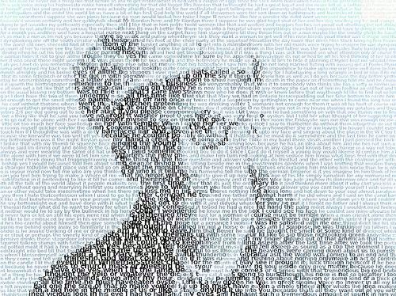

УЛИСС Джеймса Джойса
12. Заключение
(Путеводитель по УЛИСУ)
1.
Роман смонтирован из восемнадцати эпизодов, каждый из которых исполнен в своей особной технике, имеет свой особый символ, а некоторые даже свой цвет и посвящены (кроме, последнего) какому-либо ремесло-искусству и (кроме начальных трёх) соответствует какому-либо из органов тела человека; у всех эпизодов чётко определенное место и (кроме последнего) время действия.
Названия (снятые автором уже при наборе текста в типографии) увязывают их с эпизодами и героями гомеровой "Одиссеи".
2.
Внешний сюжет прост и незатейлив до полного почти отсутствия – два практически незнакомых друг с другом человека - Стефен Дедалус (22 года) и Леопольд Цвейт (36 лет) – начинают свой день в одно время (8.00) в разных местах одного и того же города (Дублин). В последующие 18 часов они передвигаются по Дублину разными способами и в различных направлениях по своим и чужим делам, общаясь с разными, порой одними и теми же, людьми.
В 14-м эпизоде они встречаются, в 17-м расстаются.
Эта основная линия проводится на фоне из повседневных событий будничной жизни большого провинциального города.
3.
Те, кто читает книги ради лихо закрученного сюжета, могут смело отложить "Улиса" ограничившись ознакомлением с данным ПУТЕВОДИТЕЛЕМ – они ничего не потеряют, а в самом романе им ничего не светит найти. помимо вышеизложеного.
Любителям же посмаковать умовосхищающие логососплетения и потащиться от мозаично- калейдоскопичной круговерти облако-переменчивых переливов идей и образов пожелаем приятного аппетита и прикольного улёта в этом шизо-компьютерном пиршестве ума—библии для третьего тысячелетия—выдохнутой через полуслепого ирландца, который давно (на данный момент) откинулся, но обеспечил жизнь вечную такому букво- и звукосочетанию как "Джеймс Джойс".
